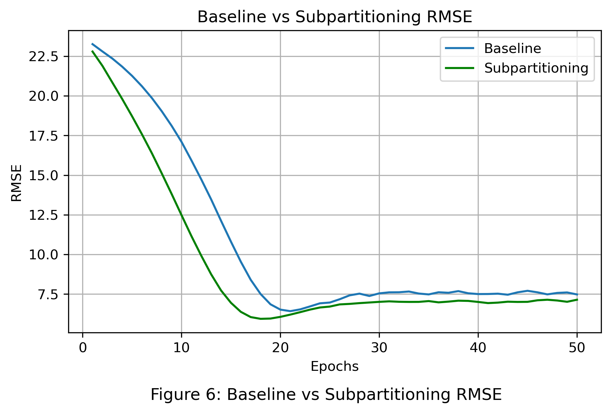
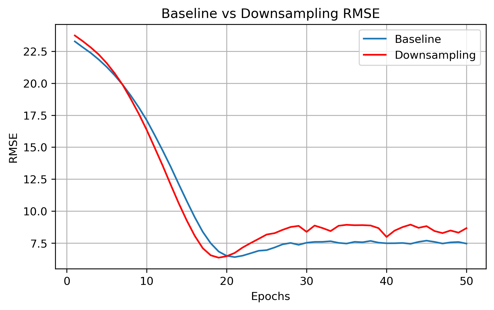

Introduction
Source: https://www.newscientist.com/article/2398994-fastest-ever-semiconductor-could-massively-speed-up-computer-chips/
Chips are key components of many applications and tools, from mobile phones to self-driving cars. Chip design involves defining the product requirements for a chip’s architecture and system, as well as the physical layout of the chip’s individual circuits, a task which is becoming increasingly challenging as these technologies continue to develop. Rising complexity is pushing the limits of existing chip design techniques, and machine learning offers a possible avenue to new progress. One specific area where chip designers face problems is predicting demand; often there are certain areas in a chip through which large amounts of information must pass, creating bottlenecks and reducing efficiency. Although electronic design automation tools have been useful to ensure scalability, reliability and time to market, our group aims to improve the process by exploring new machine learning techniques.
Given the relatively unexplored domain of machine learning for chip design, many recent attempts have tried to apply tools from different fields, which may not perfectly fit this specific use-case. For example, chip circuits are often represented as graphs in machine learning, and researchers must choose a specific kind of graph and the features within the graph. Our project aims to identify possible shortcomings in current chip representations and suggest possible improvements, which will allow for deeper and more accurate research in the future.
Exploration
Data
A circuit netlist is a representation of electronic circuits containing the logic gates that make it up. The Superblue dataset depicts the logic gates (nodes) and the wires connecting them (edges), which intuitively leads to a graph representation. We represent the designs as hypergraphs, where nodes correspond to circuit cells (logic gates or blocks), and nets are modeled as hyperedges that connect one driver cell to multiple sink cells. Source: https://arxiv.org/pdf/2404.00477
Our specific circuits
We used 12 Superblue circuits from (Viswanathan et al., 2011, 2012). These circuits were used in the original DE-HNN paper, and will be used to remain consistent with our baseline model. Each netlist ranges from 400,000 to 1,300,000 nodes and is extremely complex.
Baseline Model
We extended research into the DE-HNN (Directional Equivariant Hypergraph Neural Network) model architecture, a framework for learning circuit properties from netlist graphs. The DE-HNN model implemented by Luo et al. is as a message-passing neural network on a directed hypergraph. Importantly, it makes use of injected virtual nodes that simplify the graph structure by forcefully adding connections between topologically nearby nodes.

Our work was benchmarked against, and later built upon, a two layer DE-HNN model, with a node dimension of 16 in each layer, and virtual nodes. The dataset for this model used Superblue 18 and 19 as validation/test chips, and the remaining 10 chips served as training data, although we conducted an analysis that showed that most configurations of a train/test split had similar results. This baseline model had validation and test RMSE converging at around 6.4.
Exploratory Data Analysis
We started by creating a heatmap of congestion across Superblue 18 (our validation chip) to illustrate where the demand approaches or exceeds the physical capacity of the chip. We also visualized its routing demand distribution – the number of routing tracks necessary in each region of the chip - with a histogram. These analyses reveal how routing resources are utilized across the design, identifying patterns and outliers. Most of the Superblue chips have a small fraction of regions with sizable demand; these regions have disproportionately large routing load, which makes them an important target for future machine learning models.
More Analysis
In practice, these maps can highlight issues such as too many cells being bunched near a macro pin or a channel, with multiple long nets running through, and is also relevant in machine learning contexts when considering the importance of identifying repeating graph substructures. This particular chip’s demand histogram is also narrow and somewhat centered at one of the peaks, which indicates the routing load is relatively balanced across the chip. In contrast, demand distributions on other chips followed a wide or skewed distribution with significant outliers, which indicates uneven routing resource usage or poor design.
Explanation
Interpreting the DE-HNN model’s predictions is difficult because we don’t understand how it interprets the features to make a prediction about the demand in different parts of the chip. To get a better idea of what features are impacting predictions the most and how, we conducted an ablation study and SHAP analysis.
Ablation Study
We first implement an ablation study. By inspecting the model’s performance by dropping one feature at a time, we can rank the features by their impact on the model’s performance. More important features should worsen the model more when removed.
The features that we work with are:
- Cell type - The type of logic gate ex. AND, OR
- Width and height - Physical dimensions of the cell
- Orientation - Rotation of the cell
- Degree - The number of nets a cell is a part of
- Eigenvectors - Spatial embeddings that reveal clusters in the graph
- Degree Distribution - A local view of the graph, counting the number of neighbors at increasing distances
- Persistence Diagram - A summary of topological features encoding growing neighborhood around a node
| Feature | RMSE | % Change |
|---|---|---|
| Baseline | 5.313 | - |
| Cell Type | 5.354 | +0.8 |
| Height | 5.379 | +1.2 |
| Width | 5.374 | +1.1 |
| Orientation | 5.366 | +1.0 |
| Degree | 5.322 | +0.2 |
| Eigenvectors | 6.234 | +17.3 |
| Degree Distribution | 5.653 | +6.4 |
| Persistence Diagram | 5.425 | +2.1 |
| All topological features | 9.267 | +74.4 |
This ablation study showed that the most important features are the eigenvectors, degree distribution, and persistence diagram. Since these are all the topological features that relate to graph structure it makes sense that the connections themselves may be more important than the cell features. If we remove all of the topological features at once, the performance worsens by 74.4% further showing that the graph structure is crucial to predicting congestion.
SHAP Analysis
Another way to quantify feature importances is with SHAP, or SHapley Additive exPlanations. SHAP is a game-theory-based method for explaining a machine learning model’s predictions by calculating the impact of each feature in every prediction, and provides both a magnitude and direction for a feature’s effect.
We ran the SHAP algorithm on a LightGBM model using the same train/test split as in the baseline, and generated the feature importances.
This SHAP plot supports the findings from the previous ablation study; the eight most impactful features are eigenvectors, and all ten eigenvectors are within the top twelve out of the 45 total features. We are unable to perform significant analysis on the directionality of each feature’s impact, as the eigenvectors are simply embeddings of the graph structure, but knowledge of the eigenvectors’ relative importance can help guide future experiments.
Experimentation
Following our initial EDA and attempts at drawing insight on the baseline model through explainable AI methods, we constructed a set of informed experiments to tackle key issues with the baseline model: long runtime, lack of generalizability, and limited learning on the node and net features.
LightGBM
As previously shown, there are several useful features in our dataset for making predictions on demand. However, the millions of nodes and nets in the graph means training the DE-HNN is slow, leading to real world problems like delays in chip design. This led us to considering tree-based models as an alternative architecture for this task.
Hypothesis
Although these models would not have any information about the connections in the graph lowering prediction accuracy, we hypothesized that they would reduce training time due to the tabular data structure.
Finding
| Model | Training RMSE | Validation RMSE | Test RMSE | Training Time (min) |
|---|---|---|---|---|
| Baseline GNN | 17.23 | 5.01 | 6.40 | 41.97 |
| LightGBM | 10.89 | 8.52 | 13.45 | 0.46 |
| Random Forest | 10.73 | 7.83 | 11.03 | 10.81 |
We experimented with two tree-based modeling architectures, LightGBM and Random Forest. For each model, we ran a grid search to optimize it, and settled on the final hyperparameters used to generate the results in the table.
Overall, these new approaches did not have as much success as the baseline DE-HNN model, likely because there is importance in the connections between nodes that simply isn’t captured by the feature set. However, the tree-models trained significantly faster, with the LightGBM model training nearly 100x faster than the baseline DE-HNN, and the Random Forest model about 4x faster (but with slightly less loss in performance). This suggests that there may be some value in further exploring this approach, especially with further optimizations or feature enhancements.
Feature Engineering (Adding Capacity)
Although the DE-HNN does well at capturing the graph structure, it doesn’t learn much from the features. Therefore, we wanted to try adding a new feature called capacity into the model to see if it could perform better. Capacity is a rough estimate of the amount of resources available for placing cells and routing wires in a given area. We believe that the DE-HNN model can learn the interactions between capacity and dense topology, to learn that areas with low capacity but a large cluster of cells tend to be more congested.
Hypothesis
We hypothesize that including capacity will improve the performance of the model over the baseline. Further, we hypothesize that the LightGBM models will improve due to its reliance on the feature set.

Finding
| Model | Training RMSE | Validation RMSE | Test RMSE | Training Time (min) |
|---|---|---|---|---|
| Baseline GNN | 17.23 | 5.01 | 6.40 | 41.97 |
| GNN + Capacity | 17.21 | 5.01 | 6.36 | 42.00 |
| LightGBM | 10.89 | 8.52 | 13.45 | 0.46 |
| LightGBM + Capacity | 10.19 | 5.98 | 7.86 | 0.49 |
Adding capacity only improved the performance of the DE-HNN model by 0.6%, showing that it did not have much of an impact on the model. This result follows our previous finding that the DE-HNN only learns from the graph structure and not the features. Since high capacity areas are correlated with densely connected areas in the graph, the DE-HNN may already be estimating capacity without needing an explicit feature for it.
However, we see an improvement of 41.6% in the LightGBM model upon including capacity. Since a tree model has no way to model the graph structure, it needs to be explicitly given features like capacity. Capacity is more correlated with demand than other features, making the LightGBM’s performance comparable to the DE-HNN. Although the loss is still worse than the baseline, the training time is almost 100x faster, giving a great tradeoff of accuracy for speed.
Partitioning
Chip designs translate to noisy, gigantic graphs, and it may be difficult for the model to identify and understand common structures. Through some intuition, and inspiration from a method utilized in the DE-HNN model, we believed that reducing the physical size of the problem would improve the model’s performance.
Extra Details
In the DE-HNN model, virtual nodes are inserted into the graph to connect nodes within a given partition. This partition is identified using the METIS algorithm, well-regarded for its efficiency in handling large-scale graphs and producing balanced partitions while minimizing inter-partition edge cuts. There are two key parameters considered when initializing METIS: `nparts` and `ufactor`. `nparts` refers to the number of partitions the input graph should be divided into, and `ufactor` controls the permissible imbalance between partition sizes. A low ufactor enforces balance, but might hide natural variations in structure; a higher ufactor might let natural clusters emerge even if they are of unequal sizes. While the DE-HNN model prioritized balanced partitions, our intuition regarding chip design suggested a higher ufactor may reveal clusters of nodes representing real, cohesive units within the chip.
In our experiments, we varied the ufactor from 0 to 900 in steps of 100, and the number of partitions was varied from 10 to 100 in steps of 10. We ran a parameter sweep that allowed us to evaluate partition quality in terms of conductance. A lower conductance value indicates that a partition is well-separated from the rest of the graph, suggesting a strong internal cohesion. In our approach, both the maximum and average conductance values across partitions are computed. The maximum conductance reflects the worst-case quality among all partitions, whereas the average provides an overall measure of separability. The results of our parameter sweep are depicted in Figure X. Based on our evaluations, a setting of ufactor = 600 and 10 partitions was identified as optimal for the full graph.
Recognizing that the global partitioning might obscure local substructures, we implemented a hierarchical refinement strategy, dubbed ‘Subpartitioning’. Following the initial partitioning, each of the 10 partitions was treated as an independent subgraph. For each subgraph, we reapplied the same heatmap-based parameter sweep and assessed local partition quality. The same parameter settings that were optimal for the global graph were identified as optimal for the subgraphs. This multi-level approach allowed us to capture nested modular structures that are characteristic of chip designs. This strategy resulted in 1000 “new” graphs, potentially representing functionally cohesive blocks within the chip. To mimic the original set of node and net features, we recompute the degree and Laplacian eigenvector for each node and net. Though the training set has increased 100-fold, each graph is, on average, 1/100th the size of the original graph. This will dramatically cut the computational resources required to train the model. Further, we hypothesized that this strategy would allow the model to better understand the common substructures present across different designs, aiding the models generalizability on unseen designs.
Hypothesis
Chip designs likely share certain substructures, which better encapsulate local dependencies causing congestion.
Finding

| Model | Training RMSE | Validation RMSE | Test RMSE | Training Time (min) |
|---|---|---|---|---|
| Baseline GNN | 17.23 | 5.01 | 6.40 | 41.97 |
| Subpartitioning | 15.82 | 4.38 | 5.92 | 18.38 |
Subpartitioning noticeably improves performance, while significantly reducing training time and required memory. In initial experiments, we observed that the loss plots were highly erratic and failed to converge, due to the increased amount of training graphs. Reducing the learning rate by a factor of 100 allowed the model to quickly and smoothly converge. In fact, we see the model achieve a lower test loss than the baseline model. These results suggest that reducing the problem was a viable strategy and allowed the GNN to better capture local dependencies. We believe the model learned to identify smaller common networks in the chip, aided by, importantly, training on smaller, cohesive graphs.
Downsampling
In our EDA, we noticed that the demand variable is bimodal, with a smaller peak between 0 and 5 and a much larger peak between 15 and 20 (refer to \ref{fig:heatmap_histogram}b). In conducting an error analysis on the baseline model, we noticed that it generally did well at predicting values around the larger peak, but failed to recognize the second common range of values.
To try and create a more representative model that derives learnings relevant to the full dataset, we decided to implement downsampling - a process in which the training data is binned by the target variable, and each bin is randomly sampled to ensure equal sizes. This ensures that the dataset is balanced across the distribution of the target variable, and will ideally allow us to improve the model’s performance. Choosing the number of bins and the bounds of each bin was an important task, as these outputs could significantly alter the final model’s predictions. To ensure a balanced dataset, while minimizing the amount of data removed, we performed a parameter sweep over the bin count and size. We also ensured that the edges also matched the new, smaller dataset by removing connections that involved a removed node, which may have damaged local structures, but helped shrink the overall dataset.
Hypothesis
From this downsampling process, we hypothesized that we would be able to improve generalize to more chips, while preventing overfitting. We also expected that a reduced dataset size would improve the runtime.
Finding

| Model | Training RMSE | Validation RMSE | Test RMSE | Training Time (min) |
|---|---|---|---|---|
| Baseline GNN | 17.23 | 5.01 | 6.40 | 41.97 |
| Downsampling | 20.84 | 4.87 | 6.36 | 19.85 |
Downsampling slightly reduced both the validation and test RMSE, suggesting that this method did help the model generalize slightly better. Even though the downsampled dataset was slightly different every time, due to random sampling, these results were relatively consistent. The larger improvement, however, was in terms of the training time, which was cut in half. This is driven by the significantly reduced dataset, not just in terms of the number of nodes, but also the connections between them. In addition, the model trained on the downsampled dataset converged slightly faster.
The fact that this approach was able to replicate the performance of the DE-HNN may suggest that not all the information in the dense graph is relevant, and that not much information is lost with a stratified downsampling approach. Using domain specific knowledge or a more informed approach to defining the bins for downsampling could lead to even further improvements.
Hypervectors
The core idea of a GNN is to learn how to represent each node in the graph by considering its own features, the features of its neighbors, and the structure of the graph. The GNN allows information to propagate through the graph with message passing, or neighborhood aggregation, a process that is repeated in every layer of the model. This is a very complex model, especially when using virtual nodes to capture long-range interactions.
We believe that there may be limitations of representing data as nodes and edges in a graph, which essentially reduces the dimensionality of the data. Intuitively, AI models thrive on high-dimensional data, and GNNs, by their very nature, restrict the dimensionality. We decided to implement Hypervector Feature Encoding: either replace or augment DE-HNN’s input layer to use hypervector representations for nodes and nets, as they allow for a much richer representation of data with higher dimensionality. We started by encoding each node’s features into a 10,000-bit random vector. To mitigate accuracy loss, we can introduce lightweight learned components on top of hypervector outputs. This can recover some of the fine-grained optimization capability of deep networks while still keeping the bulk of computation in the ultra-efficient HDC domain.
Hypothesis
We hypothesize that this change will help simplify the DE-HNN architecture, drastically reduce memory overhead (as there is no need to learn/store huge embedding matrices), and improve cross-design generalization.
Finding
We found integrating hypervectors in place of embeddings is faster and more memory efficient, although it wasn’t as accurate. More specifically, a model trained on hypervectors was able to identify congestion with 70-80% accuracy, which was lower than the baseline. There is thus a potential accuracy trade-off: hyperdimensional computing (HDC) might sacrifice a bit of peak accuracy in exchange for gains in speed and memory.
Conclusion
The success of alternate representations of a chip design, through downsampling and subpartitioning, suggest that the full graph structure is too complex for the GNN to model. As it stands, we believe local and global information is still not easily propagated through the model. Our experiments validate two methods to reduce noise and improve generalizability on different levels of granularity. Downsampling “simplifies” the graph while mimicking its original characteristics (through effective stratified sampling). Each design likely shares similar overarching characteristics. Downsampling attempts to capture this larger structure while limiting the various sources of noise present throughout the dense network of each chip. Subpartitioning, on the other hand, more strictly adheres to the chip design, but prioritizes local dependencies with the belief that these structures are representative of smaller blocks common within all designs. Both of these methods reduce the complexity and overall size of the dataset, resulting in a drop in required computing resources and faster training.
Experiments with tree-based models also produced interesting results. Particularly, after adding capacity as a feature, LightGBM approached similar losses as the baseline DE-HNN. When looking at the SHAP analysis, this predictive success was in large part due to the eigenvectors, which serve as a representation of the graph structure. This approach wasn’t as effective as a full GNN, however, suggesting that there is value to the edges that cannot be described by the eigenvectors alone.
As naive as our algorithms were, we believe that their performance can be enhanced with more thoughtful design choices suggested by engineers from various points in the chip design lifecycle. Such domain expertise will help identify what aspects of a design can be prioritized or ignored when determining these alternate representations. We believe that a close look into stratification strategies can create more expressive downsampled graphs. Similarly, we believe that even finer substructures can be extracted while subpartitioning, or, alternatively, some structures are better analyzed as larger, cohesive pieces.
Of course, with different constraints, from varying use-cases to time and compute restrictions, comes a trade-off. A cursory analysis early in a chip’s design might not require the extensive training time of a GNN, and can be sufficiently modeled with a tree architecture. Certain chips may call for the preservation of local structures and a partitioning approach. Designing a new chip from scratch may benefit from building up a downsampled design of a similar chip.
Expanding on these experiments will likely depend on specific contexts, and we believe they can be further by methodical, domain-guided alterations to the algorithms we propose. It will be interesting to further explore this direction.